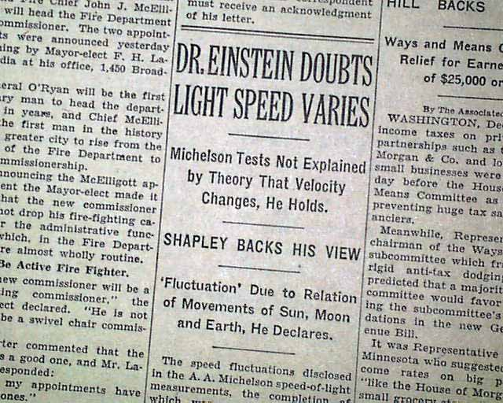

Speed Of Light
Time was taken as an absolute, however Einstein changed the game. He proved time is not an absolute , it can be distorted by gravity..
Absolute Speed of Light

As we have studied till date speed of light is absolute and is 3*10^8 m/s approx. But in reality it might sound unbelievable that the speed of light we consider isn't the actual speed of light. So , the question rises :
what's the actual speed then?.
Are all the experiments and theories made assuming light's speed as an absolute wrong?
Is Albert Einstein Wrong?
The answer is simple, NO.
This started when Einstein published his article about general relativity. Prior to that , time was taken as an absolute, however Einstein changed the game. He proved time is not an absolute , it can be distorted or can be disturbed by gravity, and more . To prove time is not an absolute, Einstein used speed of light as an absolute.
In his article, he wrote" Speed of light is 3*10^8 (assumption)...."

Here that assumption word is completely neglected ,as the speed of light purposed by Einstein worked perfectly with everything and also matched with experimental verification of measurement of speed of light conducted by various scientists.
if that worked and is correct according to various experiments, what the point of raising this question of speed of light?.
The point is raised not because it was an assumption which was experimentally verified later , the reason behind of raising this question is Why is there not one way measurement of speed of light?.
Till this date , all various experiments regarding measurement of speed of light are not one way measurements. They are measured after multiple reflections of light ray.
first Einstein assumed speed of light to be 3*10^8 m/s^2 not cleared one way measurement or measurement included reflections and later that value was experimentally verified using reflection ( multiple) and during reflection it is assumed that there's no loss of speed of light.
So, it can be easily said that we all are taking speed of light (3*10^8 m/s^2) as an true speed of light with a lot of assumptions. That's the reason behind all this.
Then ,You might wonder how can we measure one way speed of light? The solution isn't quite easy.
For accurate unidirectional measurement of light, we need to do experiment on space where there's least effect of solar wind, time dilation and gravity. And that place is non other than space(orbital region of a planet).
If experiment is conducted in Earth, due to earth constant motion on its axis and around the Sun , due to time dilation because of gravity we can't measure unidirectional speed of light. So, what we can do is we prepare two photo-sensitive stations, One will emit light ray and another will receive. Those photo-sensitive stations contain a timer which runs when a ray of light is detected.
Then those photo-sensitive stations are separated with required distance, when first station emits light its timer runs and when 2nd station receives light its timer runs. hence by observing the timers , we can calculate the true one directional speed of light.
More explanations on youtube Youtube
Precautions to be applied are:
The experiment must be done in space like inside ISS and must be inside almost dark room .
It may not seem easy as in written form, but why not give it a try.
Image credits:
https://secure-images.rarenewspapers.com/ebayimgs/12.20.2016/image090.jpg https://i.ytimg.com/vi/klM4MutLG0k/maxresdefault.jpg https://i.ytimg.com/vi/pTn6Ewhb27k/maxresdefault.jpg